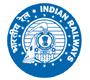

North Eastern Railway
Home
Home
Learning Resources
NORTH EASTERN RAILWAY

start
index
Gyandeep 2015
Formal Assurance of Signaling Safety
Mahesh Mangal, General Manager/CORE/ALD
Pallab Dasgupta, Professor, IIT/Kharagpur
Data Logger Based - MIS
R.K.Jain, CSE/WCR
Development of Ventre for Safety Critical Software for Signalling Applications
C.K.Prasad, Professor Telecom/IRISET
Radio Frequency based Advance Warning System
Rajesh Kumar Pandey, Director/Telecom/RDSO
Insight into TPWS Interoperability Trial
V Naga Malleswara Rao, Dy.CSTE/Projects/MAS
VOIP based Train Traffic Control Communication System
Yashpal Singh Tomar, Director Telecom/RDSO
Protection of LV & ELV Systems against LEMPs
P Venkata Ramana, SPS/IRISET
Automated Cable Testing
B.Sambi Reddy, Chief Engineer/Efftronics Systems PVT.LTD
Turning Copper to Gold
Madhukar Swayambhu, Vice President, Zyxel Technologies India Pvt.Ltd
ECO Park - IRISET Campus
R.Bhaskaran, IRSSE,GGM/Railtel/Chennai
Resettable PPTC Fuse Fundamentals and it's working
M Koteshwara Rao, Professor Signalling/IRISET
Microlok-II Local Control Panel - LCP
P Sreenivasu, LS/IRISET
A New Network PAradigm
Madhukar Swayambhu, Vice President, Zyxel Technologies India Pvt.Ltd
Ethical Hacking
V.Balasubramanyam, Instructor/IRISET
Transducers
B.Annapurna Rao, Instructor/IRISET
Field Measurements on an In-Service Optical Fibre
Y.V.Prasad, Instructor/IRISET
Session Initiation Protocol
S M Hafeez Ali, Asst. Professor (Telecom), IRISET
EndPoint Security
D.Anandam, Instructor, IRISET
BACK